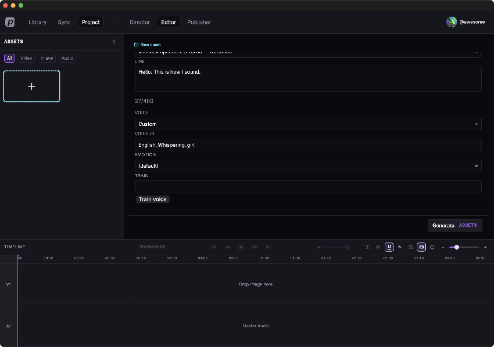
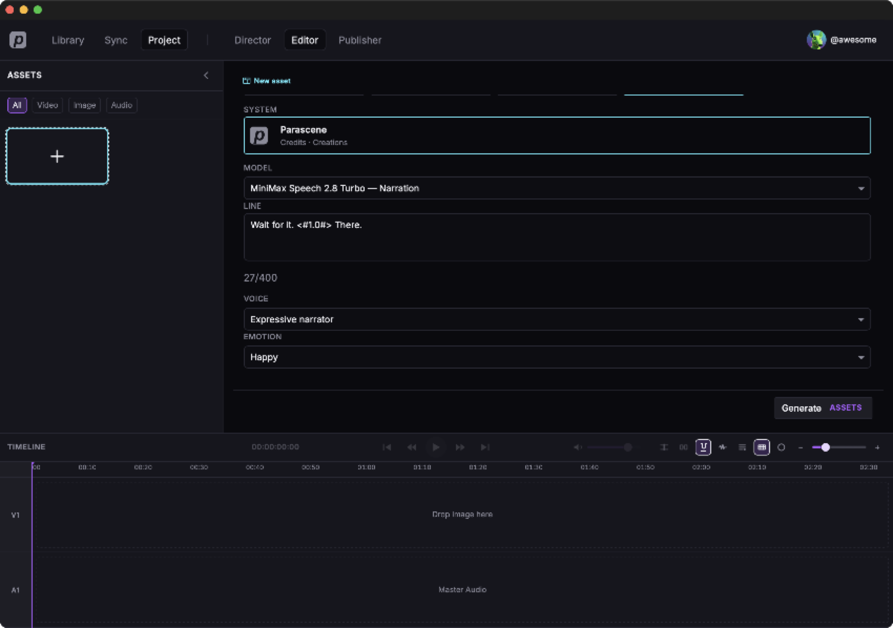
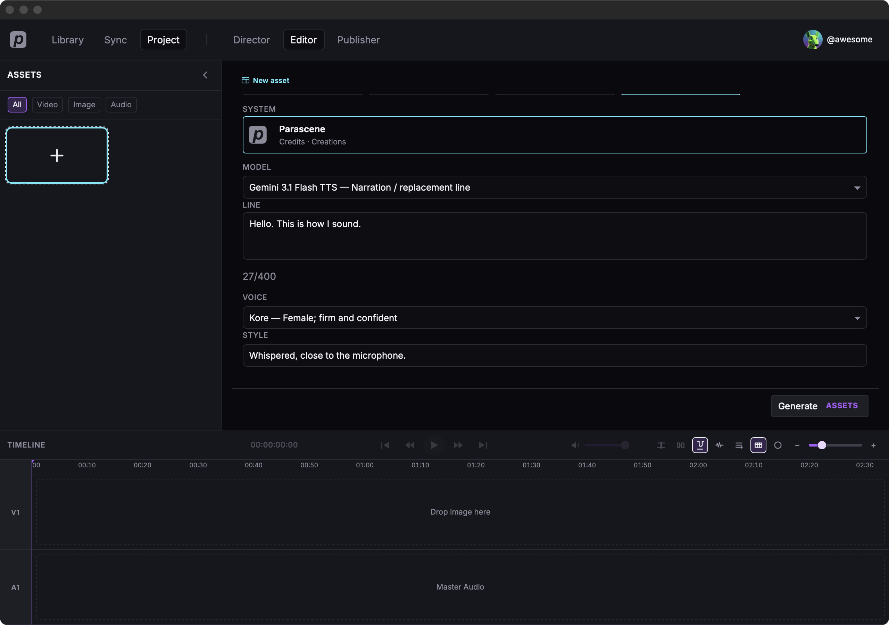

Speech voices
Same line, two models. MiniMax has English system ids you pick, or paste. Gemini has named voices and a Style box. The marks in the line only work on MiniMax.
The same line
We typed this on both models.
Hello. This is how I sound.KoreEnglish_expressive_narratorCustom voice ids
MiniMax Voice is a short list. Everything else uses
Custom. Pick Custom, then paste the exact
voice_id. The name on
MiniMax’s system voice list
is only a label — the id is what the model wants. English has 45
system ids. A cloned id from Train voice works the
same way.
- Add asset → Text to Speech → Parascene.
- Model
MiniMax Speech 2.8 Turbo. - Voice Custom.
-
Voice ID
English_Whispering_girl.

English_Whispering_girlPauses, emotion, and sounds
MiniMax reads marks in the line. Gemini does not — it will speak the marks as words. Gemini steering is the Style box.
MiniMax pause
<#seconds#> inserts silence. Put a word between two
pauses.
Wait for it. <#1.0#> There.
English_expressive_narratorKoreMiniMax emotion
Emotion is a control, not marks in the line. Happy,
sad, angry, fearful, disgusted, surprised, calm, fluent, or auto.
Braces like {happy} are spoken.
English_expressive_narratorEnglish_expressive_narratorMiniMax sounds
Parentheses add a breath or a laugh in place:
(laughs), (sighs), (breath).
That's wonderful (laughs) and we did it.English_expressive_narratorGemini Style
Gemini has no pause marks and no emotion menu. Type how it should speak in Style.
Whispered, close to the microphone.
KoreMiniMax English voices
Same line on every English system id. In the list is a Voice dropdown choice. Custom is the same id pasted after you pick Custom.
In the Voice list
English_expressive_narratorEnglish_radiant_girlEnglish_magnetic_voiced_manEnglish_compelling_lady1English_Aussie_BlokeEnglish_captivating_female1English_Upbeat_WomanEnglish_Trustworth_ManEnglish_CalmWomanEnglish_Graceful_LadyEnglish_ReservedYoungManEnglish_PlayfulGirlEnglish_ManWithDeepVoicePasted as Custom
English_UpsetGirlEnglish_Gentle-voiced_manEnglish_Whispering_girlEnglish_Diligent_ManEnglish_MaturePartnerEnglish_FriendlyPersonEnglish_MatureBossEnglish_DebatorEnglish_LovelyGirlEnglish_SteadymentorEnglish_Deep-VoicedGentlemanEnglish_WiseladyEnglish_CaptivatingStorytellerEnglish_DecentYoungManEnglish_SentimentalLadyEnglish_ImposingMannerEnglish_SadTeenEnglish_PassionateWarriorEnglish_WiseScholarEnglish_Soft-spokenGirlEnglish_SereneWomanEnglish_ConfidentWomanEnglish_PatientManEnglish_ComedianEnglish_BossyLeaderEnglish_Strong-WilledBoyEnglish_StressedLadyEnglish_AssertiveQueenEnglish_AnimeCharacterEnglish_JovialmanEnglish_WhimsicalGirlEnglish_Kind-heartedGirlGemini voices
Named voices on Flash TTS. The list in the form is longer — these are a few that sit far apart.
KorePuckCharonZephyrFenrirLedaWhere to go from here
Generate speech and music — one spoken line, then a second clip on A2.
Audio models — speech and music, by job.
Generate a video with audio — turn a spoken file into a talking clip.